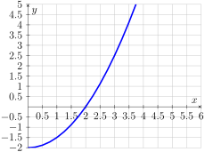
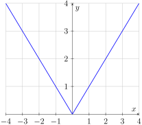
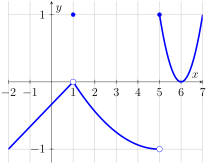
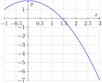

Section2.1Derivatives graphically and numerically (DF1)
Learning Outcomes
Estimate the value of a derivative using difference quotients, and draw corresponding secant and tangent lines on the graph of a function.
Subsection2.1.1Activities
Activity2.1.1.
In this activity you will study the velocity of a ball falling under gravity. The height of the ball (in feet) is given by the formula \(f(t) = 64-16(t-1)^2\text{,}\) where \(t\) is measured in seconds. We want to study the velocity at the instant \(t=2\text{,}\) so we will look at smaller and smaller intervals around \(t=2\text{.}\) For your convenience, below you will find a table of values for \(f(t)\text{.}\) Recall that the average velocity is given by the change in height over the change in time.
Table37.
\(t\, \text{(seconds)} \)
1
1.5
1.75
2
2.25
2.5
3
\(f(t) \, \text{(feet)} \)
64
60
55
48
39
28
0
(a)
To start we will look at an interval of length one before \(t=2\) and after \(t=2\text{,}\) so we consider the intervals \([1,2]\) and \([2,3]\text{.}\) What was the average velocity on the interval \([1,2]\text{?}\) What about on the interval \([2,3]\text{?}\)
(b)
Now let’s consider smaller intervals of length \(0.5\text{.}\) What was the average velocity on the interval \([1.5,2]\text{?}\) What about on the interval \([2,2.5]\text{?}\)
(c)
What was the average velocity on the interval \([1.75,2]\text{?}\) What about on the interval \([2,2.25]\text{?}\)
(d)
If we wanted to approximate the velocity at the instant \(t=2\text{,}\) what would be your best estimate for this instantaneous velocity?
Observation2.1.2.
If we want to study the velocity at the instant \(t=2\text{,}\) it is helpful to study the average velocity on small intervals around \(t=2\text{.}\) If we consider the interval \([2,2+h]\text{,}\) where \(h\) is the width of the interval, the average velocity is given by the difference quotient
We want to be able to consider intervals before and after \(t=2\text{.}\) A positive value of \(h\) will give an interval after \(t=2\text{.}\) For example, the interval \([2,3]\) for \(h=1\text{.}\) A negative value of \(h\) will give an interval before \(t=2\text{.}\) For example, the interval \([1,2]\) corresponds \(h=-1\text{.}\) In the formula above, it looks like the interval would be \([2,1]\text{,}\) but the standard notation in an interval is to write the smallest number first. This does not change the difference quotient because
Consider the height of the ball falling under gravity as in Table 37 .
(a)
What was the average velocity on the interval \([2,2+h]\) for \(h=1\) and \(h=-1\text{?}\)
(b)
What was the average velocity on the interval \([2,2+h]\) for \(h=0.5\) and \(h=-0.5\text{?}\)
(c)
What was the average velocity on the interval \([2,2+h]\) for \(h=0.25\) and \(h=-0.25\text{?}\)
(d)
What is your best estimate for the limiting value of these velocities as \(h\to 0\text{?}\) Notice that this is your estimate for the instantaneous velocity at \(t=2\text{!}\)
Definition2.1.5.
The instanteous velocity at \(t=a\) is the limit as \(h \to 0\) of the difference quotient \(\frac{f(a+h)-f(a)}{h}\text{.}\) In the activity above the instantaneous velocity at \(t=2\) is given by the limit
In this activity you will study the slope of a graph at a point. The graph of the function \(g(x)\) is given below. For your convenience, below you will find a table of values for \(g(x)\text{.}\)

Figure38.The graph of \(g(x)\)
Table39.
\(x \)
1
1.5
2
2.5
3
\(g(x) \)
-1.5
-0.875
0
1.125
2.5
(a)
What is the slope of the line through \((1,g(1))\) and \((2,g(2))\text{?}\) Draw this line on the graph of \(g(x)\text{.}\)
(b)
What is the slope of the line through \((1.5,g(1.5))\) and \((2,g(2))\text{?}\) Draw this line on the graph of \(g(x)\text{.}\)
(c)
Draw the line tangent to \(g(x)\) at \(x=2\text{.}\) What would be your best estimate for the slope of this tangent line?
(d)
Notice that the slope of the tangent line at \(x=2\) is positive. What feature of the graph of \(f(x)\) around \(x=2\) do you think causes the tangent line to have positive slope?
The function \(f(x)\) is concave up
The function \(f(x)\) is increasing
The function \(f(x)\) is concave down
The function \(f(x)\) is decreasing
Observation2.1.8.
The slope of the secant line to \(f(x)\) through the points \(x=a\) and \(x=b\) is given by the difference quotient \(\frac{f(b)-f(a)}{b-a}\text{.}\) As the point \(x=b\) gets closer to \(x=a\text{,}\) the slope of the secant line tends to the slope of the tangent line. In symbols, the slope at \(x=a\) is given by the limit
In Activity 2.1.1 and Activity 2.1.4 you studied a ball falling under gravity and estimated the instantaneous velocity as a limiting value of average velocities on smaller and smaller intervals. Drawing the corresponding secant lines, we see how the secant lines approximate better the tangent line, showing graphically what we previouly saw numericaly. Here is a Desmos animation showing the secant lines approaching the tangent line https://www.desmos.com/calculator/bzs1bxz7fa.
Activity2.1.11.
Suppose that the function \(f(x)\) gives the position of an object at time \(x\text{.}\) Which of the following quantities are the same? Select all that apply!
The value of the derivative of \(f(x)\) at \(x=a\)
The slope of the tangent line to \(f(x)\) at \(x=a\)
The instantaneous velocity of the object at \(x=a\)
The difference quotient \(\frac{f(a+h)-f(a)}{h} \)
The limit \(\displaymath\lim_{h \to 0} \frac{f(a+h)-f(a)}{h} \)
Observation2.1.12.
We can use the difference quotient \(\frac{f(a+h)-f(a)}{h} \) for small values of \(h\) to estimate\(f'(a)\text{,}\) the value of the derivative at \(x=a\text{.}\)
Activity2.1.13.
Suppose that you know that the function \(g(x)\) has values \(g(-0.5)=7\text{,}\)\(g(0)=4\text{,}\) and \(g(0.5)=2\text{.}\) What is your best estimate for \(g'(0)?\)
\(\displaystyle g'(0) \approx -3\)
\(\displaystyle g'(0) \approx -2\)
\(\displaystyle g'(0) \approx -6\)
\(\displaystyle g'(0) \approx -4\)
\(\displaystyle g'(0) \approx -5\)
Activity2.1.14.
Suppose that you know that the function \(f(x)\) has value \(f(1)=3\) and has derivative at \(x=1\) given by \(f'(1)=2\text{.}\) Which of the following scenarios is most likely?
\(f(2)=3\) because the function is constant
\(f(2)=2\) because the derivative is constant
\(f(2) \approx 1\) because the function’s output decreases by about 2 units for each increase by 1 unit in the input
\(f(2) \approx 5\) because the function’s output increases by about 2 units for each increase by 1 unit in the input
Observation2.1.15.
We can use the derivative at \(x=a\) to estimate the increase/decrease of the function \(f(x)\) close to \(x=a\text{.}\) A positive derivative at \(x=a\) suggests that the output values are increasing around \(x=a\) approximately at a rate given by the value of the derivative. A negative derivative at \(x=a\) suggests that the output values are decreasing around \(x=a\) approximately at a rate given by the value of the derivative.
Activity2.1.16.
In this activity you will study the abolute value function \(f(x)=|x|\text{.}\) The absolute value function is a piecewise defined function which outputs \(x\) when \(x\) is positive (or zero) and outputs \(-x\) when \(x\) is negative. So the absolute value always outputs a number which is positive (or zero). Here is the graph of this function.

Figure40.The graph of \(|x|\)
(a)
What do you think is the slope of the function for any \(x\) value smaller than zero?
0
1
-1
DNE
(b)
What do you think is the slope of the function for any \(x\) value greater than zero?
0
1
-1
DNE
(c)
What do you think is the slope of the function at zero?
0
1
-1
DNE
Observation2.1.17.
Because the derivative at a point is defined in terms of a limit, the quantity \(f'(a)\)might not exist! In that case we say that \(f(x)\) is not differentiable at \(x=a\text{.}\) This might happen when the slope on the left of the point is different from the slope on the right, like in the case of the absolute value function. We call this behavior a corner in the graph.
Activity2.1.18.
Consider the graph of function \(h(x)\text{.}\)

Figure41.The graph of \(h(x)\text{.}\)
(a)
For which of the following points \(a\) is \(h'(a)\) positive? Select all that apply!
-1
1
2
5
6
(b)
For which of the following points \(a\) is \(h'(a)\) negative? Select all that apply!
-1
1
2
5
6
(c)
For which of the following points \(a\) is \(h'(a)\) zero? Select all that apply!
-1
1
2
5
6
(d)
For which of the following points \(a\) the quantity \(h'(a)\) does NOT exist? Select all that apply!
-1
1
2
5
6
Activity2.1.19.
Sketch the graph of a function \(f(x)\) that satisfies the following criteria. (You do not need to define the function algebraically.)
Defined and continuous on the interval \([-5,5]\text{.}\)
The slope tangent to the graph of \(f(x)\) at \(x=3\) is zero
The rate of change of \(f(x)\) when \(x=-1\) is positive
Activity2.1.20.
You are given the graph of the function \(f(x)\text{.}\)

Figure42.The graph of \(f(x)\)
(a)
Using the graph, estimate the slope of the tangent line at \(x=2\text{.}\) Make sure you can carefully describe your process for obtaining this estimate!
(b)
If you call your approximation for the slope \(m\text{,}\) which one of the following expression gives you the equation of the tangent line at \(x=2\text{?}\)
\(\displaystyle y - 2 = m (x-2)\)
\(\displaystyle y + 2 = m (x-2)\)
\(\displaystyle y - 2 = m (x+2)\)
\(\displaystyle y + 2 = m (x+2)\)
(c)
Find the equation of the tangent line at \(x=2\text{.}\)